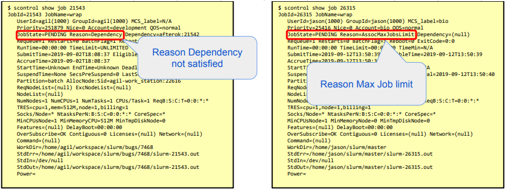

FAQ
-
Why my job is not running?
- Use the next command to see the reason:
$ scontrol show job - The reason can be:
- priority => resources being reserved for higher priority job.
- resources => required resources are in user.
- dependency => job dependencies not yet satisfied.
- reservation => waiting for advanced reservation.
- AssociationJobLimit => user account job limit reached.
- AssociationResourceLimit => user account resource limit reached.
- AssociationTimeLimit => user account time limit reached.
- QOSJobLimit => Quality Of Service (QOS) job limit reached.
- QOSResourceLimit => Quality Of Service (QOS) resource limit reached.
- QOSTimeLimit => Quality Of Service (QOS) time limit reached.
- Example: 
- Use the next command to see the reason:
- Why my job was killed?
- Use #SBATCH --requeue option in your Batch File.
- Why sstat doesn't show the used resources of my completed job?
- sstat command need be used for the running job_id.
- for completed jobs use sacct command.
- Why sacct doesn't show the used resources of my running job?
- sacct command need be used for the completed job_id.
- for the running jobs use sstat command.
- sacct command need to run on the master node only, so to execute it it need be written in the script.